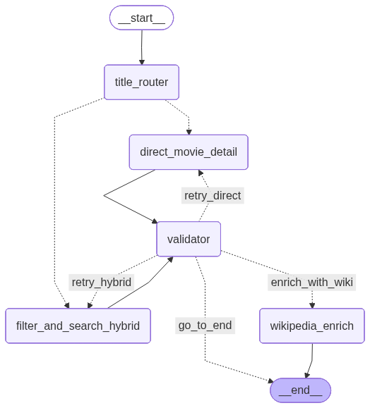

Cartographie du graphe multi-agent
¶
Graphe HorRAGor
¶
Le graphe multi-agent de HorRAGor est basé sur LangGraph.

HorRAGor
Navigation
Documentation technique
API HorRAGor
Agents et LangGraph
Couche Données
Schéma relationnel de la base de données
Cartographie du graphe multi-agent
Graphe HorRAGor
Related Topics
Documentation overview
Previous:
Schéma relationnel de la base de données